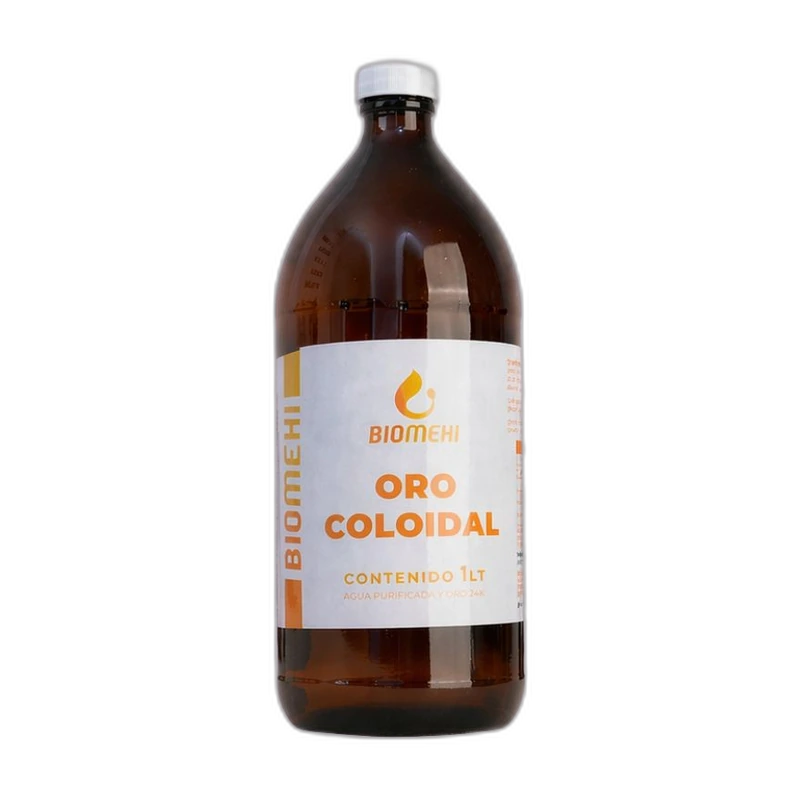

Mecanismos Fisiológicos y Beneficios Principales
- Superconductividad Sináptica y Función Cognitiva El oro es un conductor bioeléctrico de primer orden. Las micro-fracciones coloidales favorecen la velocidad de transmisión de impulsos a través de las sinapsis, optimizando la concentración, la memoria de trabajo, la agudeza mental y la disipación de la niebla cognitiva.
- Equilibrio del Sistema Nervioso & Modulación del Estrés Auxiliar biológico tradicional en la atenuación de síntomas asociados a fatiga adrenal, estrés psicofísico crónico, estados de ansiedad e insomnio, propiciando un descanso más profundo y reparador.
- Soporte en Procesos Neurodegenerativos Reconocido en la investigación biomédica integrativa como un coadyuvante fisiológico frente al deterioro cognitivo leve, coadyuvando en la estabilidad de las membranas neuronales y el eje neuroendocrino.
- Vitalidad Tisular y Acción Antienvejecimiento Favorece el intercambio iónico a nivel mitocondrial, apoyando la síntesis celular de ATP y la protección del microentorno celular frente al estrés oxidativo oxidativo.